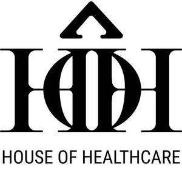

Trade Mark Journal No.2025/012 21 March 2025
UK00004167686 3 March 2025 (9,35,36,38,42)

- Class 9
- Downloadable computer software for comprehensive healthcare management including appointment scheduling, teleconsultation, integrated payment processing, CRM, data analytics, and marketing integration; Desktop, tablet, and mobile application software for unified healthcare service management and patient engagement; Web‑based platform software for scalable, future‑proof healthcare service delivery and operational efficiency; Computer software for document management; Computer software to automate data warehousing; Software for the electronic processing of data; Computer software for application and database integration; and related digital tools for continuous innovation in the healthcare, wellness, and data management sectors.
- Class 35
- Online marketplace services connecting healthcare professionals with patients and corporate clients; business management, digital marketing, and advertising services tailored for the healthcare industry, including scalable CRM and customer engagement solutions; advanced data analytics, business intelligence, and digital transformation consultancy services for optimizing healthcare operations; and related advisory and administrative services designed to adapt to emerging technologies and evolving market trends.
- Class 36
- Financial services for integrated payment solutions, including collection and disbursement services; electronic payment processing, transaction management, and settlement services via established and emerging third‑party integrations; digital wallet facilitation, money transfer services, and fintech solutions; and related online payment management and digital financial services designed to evolve with emerging digital payment ecosystems and future financial technologies.
- Class 38
- Telecommunication services for facilitating real‑time video consultations, teleconferencing, and digital communication between healthcare professionals and patients; online video appointment and interview services for remote healthcare engagement and professional recruitment, including sessions between nurses and potential recruiters; unified communications solutions incorporating emerging technologies such as augmented and virtual reality for consultations and interviews; and related telehealth and digital recruitment communication services designed to evolve with advancements in digital connectivity and telecommunication technologies.
- Class 42
- IT services and Software as a Service (SaaS) for developing, hosting, and maintaining digital platforms including healthcare management systems, appointment scheduling, teleconsultation, CRM, integrated payment processing, and data analytics; computer programming, software design, development, customization, maintenance, and technical support services; cloud computing, platform as a service (PaaS), and database integration solutions; and related IT consultancy and technical services designed to support digital transformation, continuous innovation, and emerging technological advancements.
House of Healthcare Limited